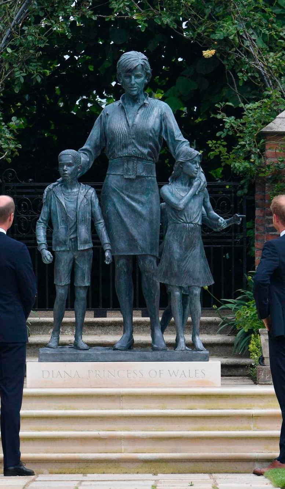
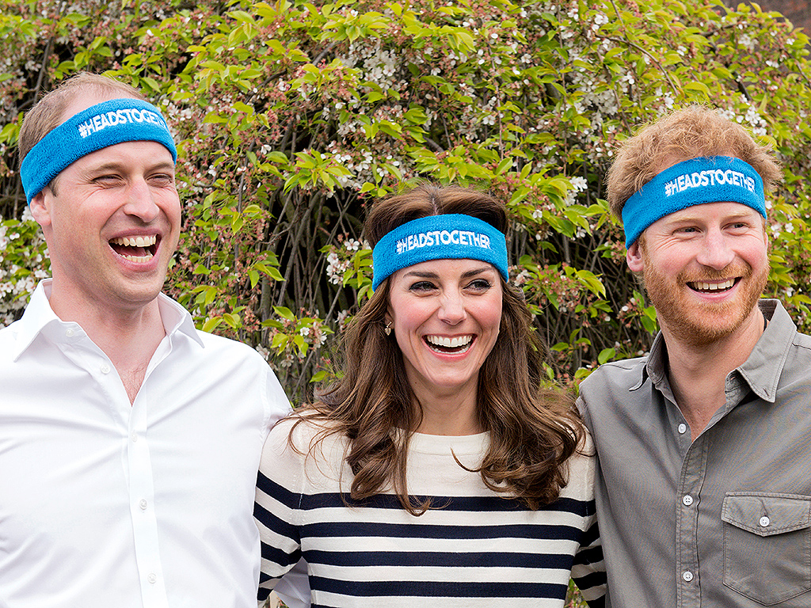

Am 31. August 1997 starb Diana an den Folgen eines Autounfalls, nachdem sie mit ihrem neuen Lebenspartner Dodi Al-Fayed vom Pariser Hotel Ritz zu ihrer Wohnung gefahren wurde. Der Fahrer des Wagens stand unter Alkohol- und Medikamenteneinfluss und fuhr mit hoher Geschwindigkeit gegen einen Tunnelpfeiler in der Alma-Unterführung in Paris. Dianas Partner, sowie der Fahrer starben noch am Unfallort. Der Leibwächter Trevor Rees-Jones überlebte mit schweren Gesichtsverletzungen. Diana starb einige Stunden nach dem Unfall im Krankenhaus an den Folgen innerer Verletzungen.
Am 06. September 1997 fand Dianas Trauerfeier statt. Mehr als eine Millionen Menschen trafen sich auf den Straßen von London, um den Trauerzug zu begleiten. Der Trauergottesdienst, an dem 2000 Personen teilnahmen, fand in der Westminster Abbey statt. Das Begräbnis endete mit der Beisetzung Dianas im privaten Rahmen in Althorp, dem Stammsitz der Familie Spencer. Im britischen Fernsehen lag die Einschaltquote bei 32,1 Millionen Zuschauern, weltweit bei über zwei Milliarden und ist somit eines der meistgesehenen Fernsehereignisse der Geschichte.
Im britischen Königshaus ist Dianas Einfluss bis heute spürbar. Die britische Monarchie ist offener und moderner geworden. Die Mitglieder haben mehr Freiraum bei der Ausübung ihrer royalen Pflichten, z.B. bei der Partnerwahl. Vor allem ihre Söhne William und Harry tragen Dianas Vermächtnis weiter. Die Familie steht bei ihnen an erster Stelle.
„Ich möchte so viel Zeit und Mühe wie möglich für die Kinder aufbringen, weil ich mit Blick auf das, was meine Mutter für uns getan hat, realisiere, dass gerade die frühen Jahre entscheidend sind für die Kinder“ - William.
Aber auch das Privatleben vieler Menschen, besonders junger Frauen, hat Diana beeinflusst. Die „Königin der Herzen“ gilt als Identifikationsfigur und wird für ihren Mut und ihre Ehrlichkeit bewundert. Beispielsweise ihr Bekenntnis zu ihrer Bulimie hat viele Menschen dazu bewegt, zu ihrer Krankheit zu stehen, denn es gab eine starke Erhöhung der gemeldeten Bulimie-Fälle.
Ihre Söhne William und Harry arbeiten schon seit vielen Jahren gemeinsam mit Williams Frau Catherine an ihrer gemeinsamen Stiftung heads together. Ziel davon ist es mental health mehr in den Forderung zu rücken und das ganze Thema zu enttabuisieren. Beide bringen ihre eigenen Erfahrungen ein und haben so auch schon mehrmals darüber gesprochen was für einen Einfluss ihre Mutter in diesem Aspekt auf sie hatte.
Am 01. Juli 2021 enthüllten William und Harry eine Statue zu Ehren Dianas im „Sunken Garden“ des Kensington Palace.
